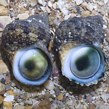
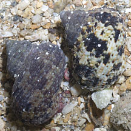
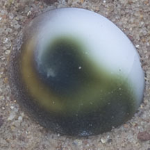
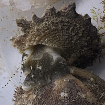
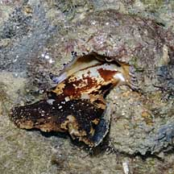
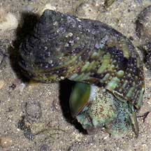
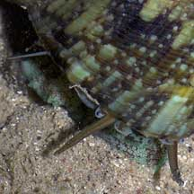
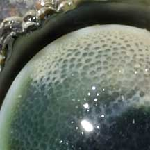
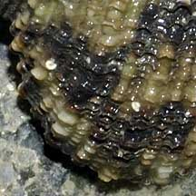

|
|
| shelled snails text index | photo index |
| Phylum Mollusca > Class Gastropoda |
| Turban
snails Family Turbinidae updated Oct 2019
Where seen? These tough snails are commonly seen on many of our rocky shores including on man-made sea walls. Smaller ones are also found under stones. Turban shells are not as well adapted to dry condictions as the Nerites and Periwinkles, and are thus generally found closer to the low water mark. Features: 3-5cm. In some species, the shell does resemble an elegant turban! Although the Latin 'turbo' actually refers to a top, the spinning toy. The shells of are sometimes covered in encrusting lifeforms so that the texture and colours are hidden. |
|
 Sisters Island, Oct 11 |
 Two different kinds of turban snails. More easily distinguished by their operculum. |
 Sometimes, only the operculum is seen on the shore. |
| Cat's eye: In most of the common turban snails, the operculum is smooth and hemi-spherical (rounded) on the side facing outwards. This possibly makes it difficult for crabs to get a grip and pry out the snail. The shape and markings of the operculum makes it look like a cat's eye so that is what it is sometimes called. Although their shells may appear boring and dull, the living animal can be in bright shades of green or blue. Under the large shell, peep little eyes and long tentacles. |
 Spurred turban snail Cyrene Reef, Jul 12 |
 Dolphin shell snail Tanah Merah, Oct 09 |
 Ribbed turban snail Labrador, May 05 |
| Sometimes confused with the Top
shell snail (Family Trochidae) has a more pyramidal shell and
a thin operculum made of a horn-like material. While the turban shell
snail has a shell with more distinct whorls and a thick, chalky operculum.
Here's more on how to tell apart turban
and top shell snails. What do they eat? Turban shells graze the algae that thrive on the rocks, scraping this off with their radula. Human uses: In our region, the larger turban snails are collected for food and their mother-of-pearl shell. The large Giant green turban snail (Turbo mamoratus) is collected for food and its shell carved into ornaments and jewellery. In recent years, heavy commercial exploitation has depleted local populations. Status and threats: The Tapestry turban shell (Turbo petholatus) is listed as 'Endangered' on the Red List of the threatened animals of Singapore. It has a smooth, brightly coloured shell in brown, green and yellow fine lines. According to the Singapore Red Data book: "Although never abundant, this species could be found up until the early 1970's but is now extremely rare. It needs to be protected from shell collectors". |
| Some Turban snails on Singapore shores |
 Operculum smooth, green centre with white and yellow margins, |
 Spiral ribs smooth without scales. |
|
 Operculum bumpy, green centre with white and greyish margins. No yellow. |
 Spiral ribs rough with tiny scales. |

| Family
Turbinidae recorded for Singapore from Tan Siong Kiat and Henrietta P. M. Woo, 2010 Preliminary Checklist of The Molluscs of Singapore. in red are those listed among the threatened animals of Singapore from Davison, G.W. H. and P. K. L. Ng and Ho Hua Chew, 2008. The Singapore Red Data Book: Threatened plants and animals of Singapore.
|
Links
References
|